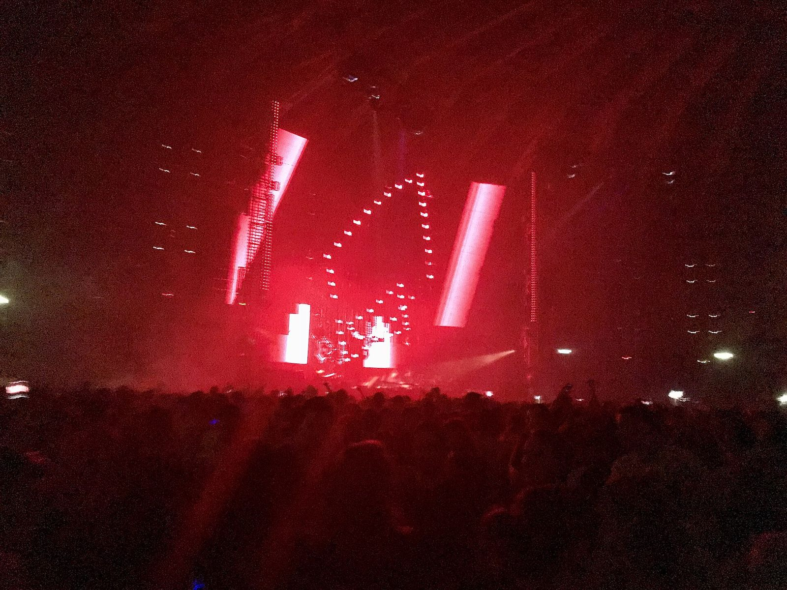
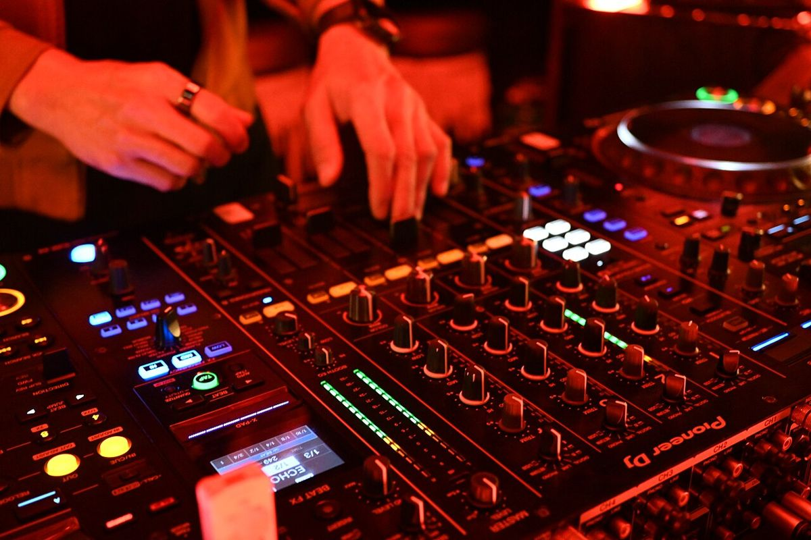
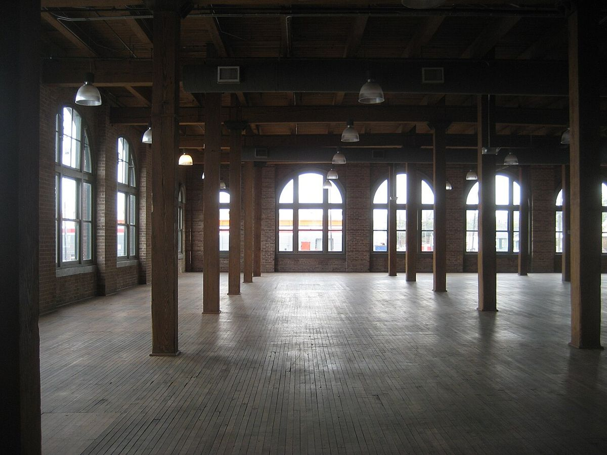

4e édition
Nuits Basses
Deux nuits de musique électronique dans une ancienne halle industrielle, à Lyon.
- Dates
- 12 et 13 juin 2027, 20 h – 5 h
- Lieu
- Les Grandes Halles, Lyon 7e
- Billets
- 32 € le soir, 54 € les deux soirs

Programmation
Huit noms, deux nuits
Deux scènes par nuit : la Nef et le Quai. Les horaires de passage ne sont pas encore fixés.


- Vendredi 12 juin · 20 h – 5 h
Vendredi
- Ora Kessel
- Mineral Club
- DJ Plume
- Sœur Machine
- Samedi 13 juin · 20 h – 5 h
Samedi
- Tessa Voigt
- Halogène
- Basse Def
- Le Comptoir Sonore, collectif lyonnais
Tarifs
Trois billets
La billetterie est ouverte, ici même.
- Pass 1 soir
- 32 €
- Pass 2 soirs
- 54 €
- Réduit étudiant, 1 soir
- 26 €
Le tarif étudiant ne vaut que pour un soir. La carte étudiante est demandée à l'entrée.
Lieu
Les Grandes Halles
Une ancienne halle industrielle au bord du Rhône, et deux scènes sous le même toit.
- Adresse
- 12 quai du Rhône prolongé, 69007 Lyon
- Scènes
- la Nef et le Quai


Pratique
Avant de venir
- Métro B, arrêt Stade de Gerland, puis 8 minutes à pied
- Pas de parking sur place
- 12 quai du Rhône prolongé, 69007 Lyon
- Interdit aux moins de 18 ans
- Portes de 20 h à 5 h, les deux soirs
- Tarif étudiant : carte demandée à l'entrée
- Vestiaire : 2 €
- Eau gratuite
- Deux scènes : la Nef et le Quai
Prenez votre place
Vendredi 12 et samedi 13 juin 2027, aux Grandes Halles. Les billets se prennent ici, sur ce site.